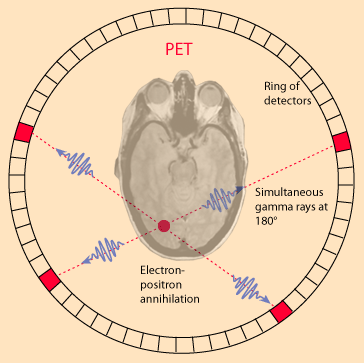

PET Scan
An interesting application in nuclear medicine is the use of positron annihilation in positron emission tomography or PET. Certain radioisotopes decay by positron emission, and such radioisotopes can be used as tracers. If injected into the body, they can be readily followed because the emission of the annihilation pairs of coincident gamma rays at 180¡ allows their source to be located along a line. Data collection for emissions at several angles permits precise location of any concentration of the radioisotope. An image of a slice of the body (called a tomograph) can be constructed by using a ring of detectors.
When a positron is emitted by a nucleus, it almost instantly finds an electron and the pair annihilates, converting all the mass energy of the two particles into two gamma rays. The two gamma ray photons possess momentum, and the conservation of momentum requires that they travel if opposite directions. A simultaneous detection of gamma ray photons in two detectors places the source on a line between those detectors.
|  | For a given location, you can sum the signal from all detector pairs that correspond to a line going through that location. All directions are equally probable for a given location, so you can normalize the signal as a measure of the concentration of the radioisotope at that location. |
PET scans are increasing in use for all parts of the body, but have been of particular value for imaging of the brain. Getting a radioisotope into the brain for measurement is challenging because the protection of the blood-brain barrier makes it difficult to get most substances into the brain. A positron emitter that can be inserted into a glucose molecule is the fluorine isotope 18F. Not only does the glucose pass the blood-brain barrier and enter the brain easily, the concentration of the radioactively tagged glucose is a measure of the level of metabolic activity at that location in the brain.
The PET scan then becomes a tool for fundamental research in that it can provide a map of the level of metabolic activity in the brain. It has been used to map the different patterns of brain activity for various activities, for example listening to music versus doing a math problem. It can map the areas of hyperactivity associated with seizure activity. Patterns of activity associated with certain brain disorders may be identified.
Another major benefit of the PET scan is in the diagnosis and treatment of cancer. An area of abnormally high activity might be suspected to be a fast-growing malignancy. If the cancer is treated with radiation or chemotherapy, the PET scan is again valuable because it is the only practical way to determine whether the location of a tumor is now metablolically inactive as a result of the therapy, or is still consuming glucose as an indication of continued activity and failure of the therapy.
|